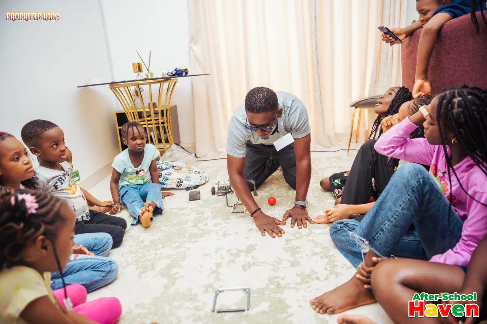
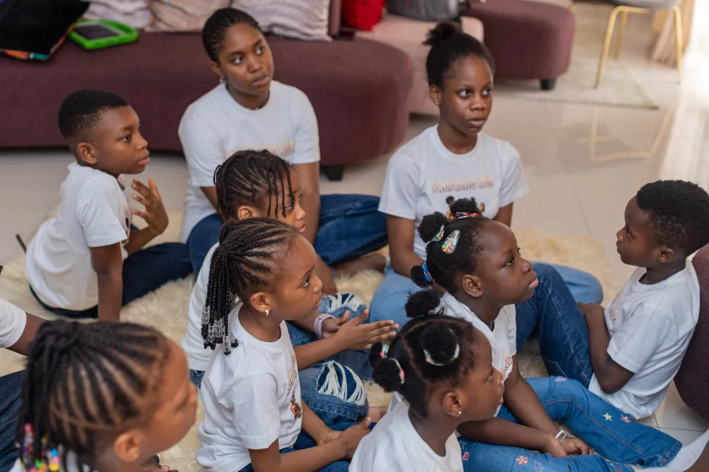
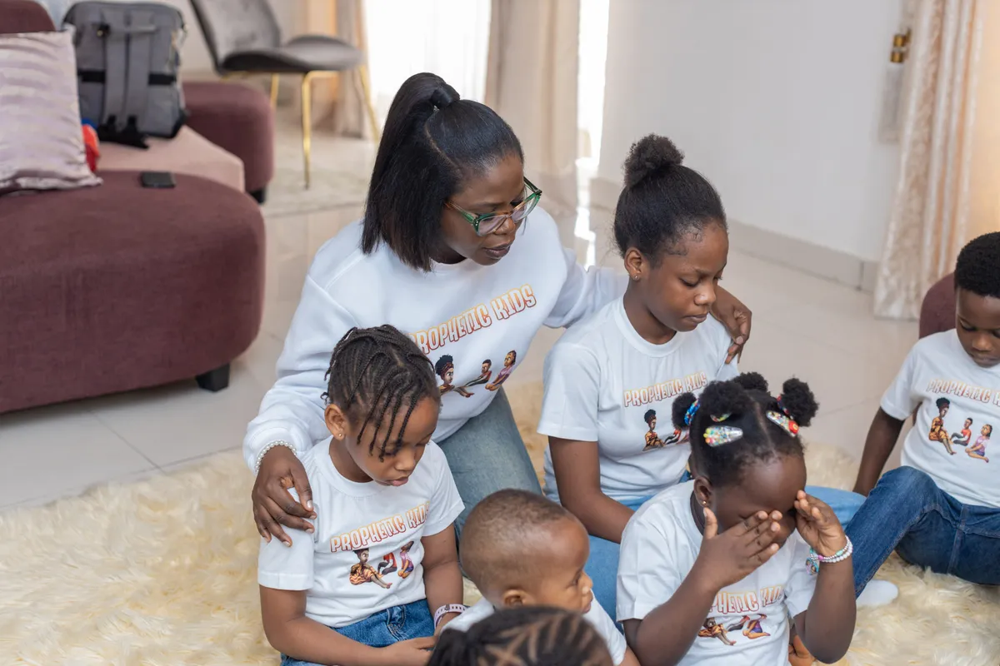
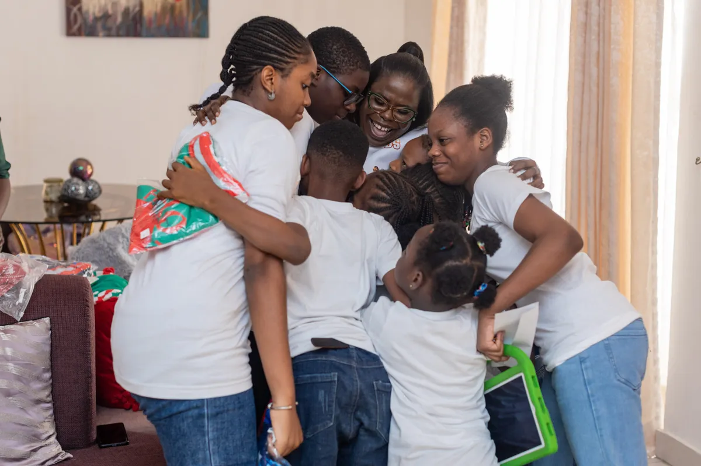
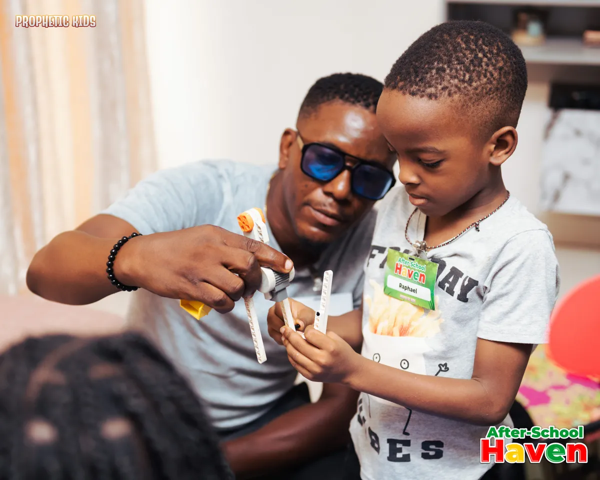

After School Haven
We give families dependable, enriching care where children can decompress, learn, play, pray, and belong.
Discover the HavenKrin Asset exists to protect that spark, nurture it with care, and give it creative ways to light up the world.
Krin Asset began when a circle of parents, educators, and storytellers noticed the same gap: children needed more spaces that felt both deeply safe and genuinely inspiring.
What started as an after-school gathering grew into a two-part mission. The Haven supports children in everyday life. Prophetic Prophetic Kids carries the same message into stories, songs, activities, and family moments at home.

We give families dependable, enriching care where children can decompress, learn, play, pray, and belong.
Discover the Haven
Children watch, read, sing, create, and ask honest questions in a joyful faith-filled world designed with them in mind.
Explore Prophetic Kids
We honour wonder, honest questions, joy, and the quiet work of growing.

Care becomes visible through preparation, presence, patience, and protection.

We make fresh, excellent work that speaks a timeless truth in a child’s language.
Temitope Adewuyi is a Christian children’s author and media creator dedicated to providing clean, faith-building content in a world where wholesome media is increasingly rare.
As the author of Prophetic Kids which has sold over 1,000 copies across seven countries and the Executive Producer of its animated series, she develops stories that strengthen children's identities and protect their innocence.
Understanding the guilt and anxiety busy parents face regarding after-school care, she expanded her mission by founding After School Haven.
This secure, nurturing environment ensures children are not just supervised while their parents work, but are actively seen, heard, and guided in their faith.
Her operational excellence stems from a professional background in Law and leadership, while her deep compassion is grounded in her training as a counselor and spiritual equipping through programs like the RIG School of Apostles & Prophets.
Ultimately, Temitope partners with parents to raise secure, faith-driven children who know God's voice and walk confidently in their purpose.
Visit our space, meet our team, or share how you’d like to be part of the mission.